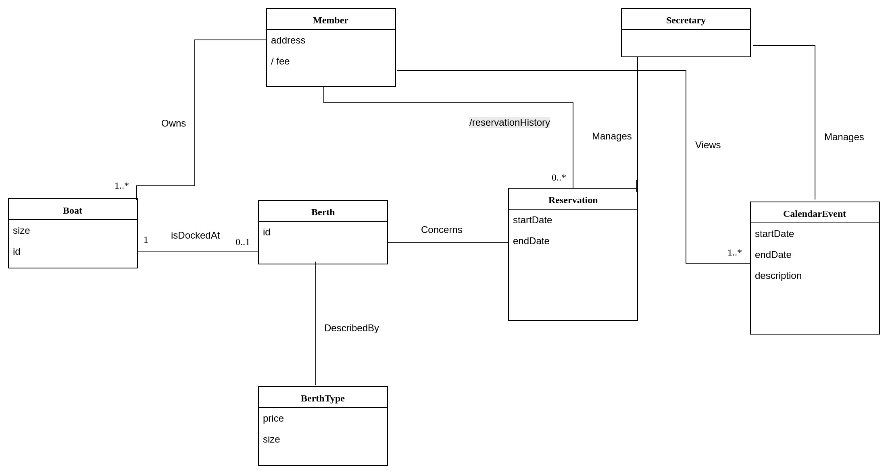
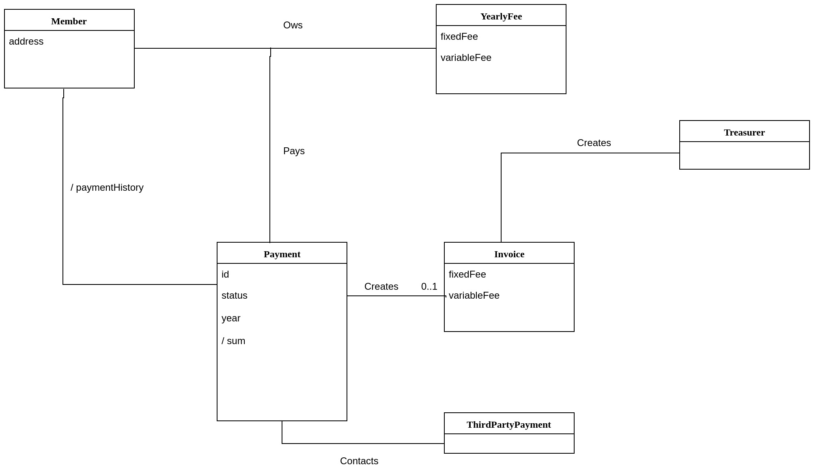

Object-Oriented Analysis and Design with UML
Portfolio
Download zip-archive with full solution WS1-3, Grade 2-4
Workshop 1
Download zip-archive with full solution for all grades
Grade 2
Download zip-archive with full solution

Assumptions have been made in the development of the model, since the domain experts could in this case not be interviewed.
Assumptions made:
- The berths have different sizes that will affect the price of the berth.
- These sizes are not random, but rather divided into categories.
Grade 3
Download zip-archive with full solution
Yacht Club - berth domain
{kind=link}
Yacht Club - payment domain
{kind=link}
Grade 4
Download zip-archive with full solution
The model consists of two diagrams, one modelling the loan-process and one the event-process.
Assumptions have been made in the making of this domain model. All of them have been verified with a librarian as being true for some libraries, but all of them are not necessarily true for all libraries, and they have therefore been marked as assumptions. Assumptions that are true for all or almost all libraries - i.e "a book can be borrowed", "if the book is returned late thara will be an overdue fee to pay" - have not been marked as assumptions.
Assumptions made
- The library catalogue contains of both books and CD:s.
- You'll want to be able to search for an item based on its creator, regardless of being interested in a CD or a book.
- There is a cost present for borrowing a CD.
- Books can be reserved.
- The reservation can have an end date.
- It is possible to rent space a the library for holding an event.
- The Librarian is responsible for taking care of the space being rented out.
- Renting of the space will cost a fee.
- The price for renting space is calculated from a fixed and a varying component.
Library - lending domain
{kind=link}
Library - event domain

Workshop 2
Grade 2
Download zip-archive with full solution
Download zip-archive with runnable, compiled version of the app for Win10x86
Instructions to run the application.
To run the application, do as follows:
- Download the runnable version.
- Unzip the directory.
- Open the directory.
- Double click on the file named "implementation.exe".
- The app should open in a command window. If the app doesn't open, do the following:
- Restore the dependencies with
"dotnet restore" - Open Windows PowerShell
- cd into the unzipped directory.
- Do the command
"./implementation.exe"
Instructions to compile the application.
To download and compile from the command line, do as follows:
- Install dotnet depending on your operating system, instructions here
- Download the source code, cd into the project directory, and initiate a new project with the command
"dotnet new console" - Replace the code in newly created Program.cs with the code in Application.cs.
- Run the command
"dotnet add package Newtonsoft.Json --version 10.0.3"to install the Newtonsoft.Json dependency. -
Create a "runtime identifier" for the runtime(s) you would like to compile for, choosing from this list, like so:
<PropertyGroup> <RuntimeIdentifiers>win10-x64;osx.10.11-x64</RuntimeIdentifiers> </PropertyGroup> - Restore the dependencies with
"dotnet restore" - Compile the project with the name of the runtime from your runtime identifier:
"dotnet publish -c Release -r win10-x64" - Launch by starting from your project file, finding the directory at the path bin/Release/netcoreapp1.1/[your-selected-runtime]/publish
- Launch the applicationin a console by running the file named implementation.exe, in a platform-specific way depending on the runtime you chose.
Design-diagrams
Sequence diagram - Register Boat
{kind=link}
Sequence diagram - View Member
{kind=link}
Class diagram